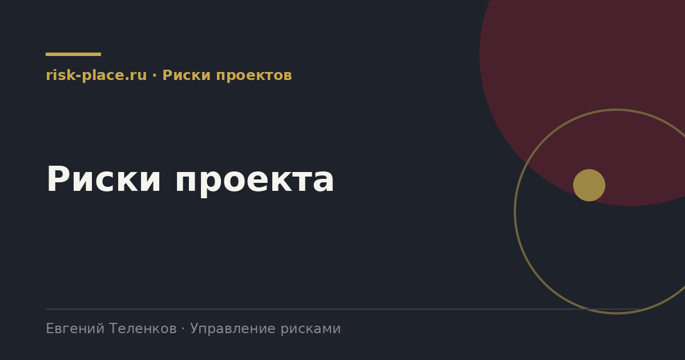

risk-
risk-Провести стартовую сессию
- Команда проекта, заказчик, ключевые подрядчики. Выявление рисков, пока решения еще можно менять дешево
Главная · Библиотека · Риски проектов · Риски проекта
Библиотека · Риски проектов
В проекте риски дороже всего, потому что срок и бюджет зафиксированы, а маневра почти нет.

У проекта есть три жестких ограничения, срок, бюджет и содержание. Риск проекта это то, что нарушает любое из них. Отсюда первое отличие, влияние риска почти всегда выражается в днях и рублях, а не в баллах, и количественная оценка здесь не роскошь, а норма.
Второе отличие в горизонте. Корпоративный риск живет годами, проектный риск имеет окно актуальности, привязанное к фазе. Риск получения разрешительной документации перестает существовать после ее получения, а риск ошибки монтажа появляется только к соответствующей фазе. Поэтому реестр проекта пересматривается на каждой контрольной точке, а не раз в квартал.
Занимает от полудня до двух дней в зависимости от масштаба.
Проверенный порядок, дает основную часть реестра.
Реестр рисков составляется на старте и не обновляется до момента, когда что-то уже случилось. Формально проект соответствует требованиям, фактически управления нет.
Второй по частоте дефект, риски проекта ведет назначенный администратор без полномочий. Он аккуратно собирает таблицу, но ни одно решение по ней не принимается. Работающая схема требует, чтобы реестр рассматривал руководитель проекта на каждой контрольной точке и чтобы часть рисков имела владельцев вне проектной команды, в закупках, в производстве, в финансах.
Частые вопросы
Одна форма для любого вопроса
Расскажем о ближайших датах, предложим формат под ваш состав участников и назовем порядок бюджета.
Предпочитаете почту — напишите на info@risk-place.ru. Адрес: Москва, улица Скаковая, 32с2.